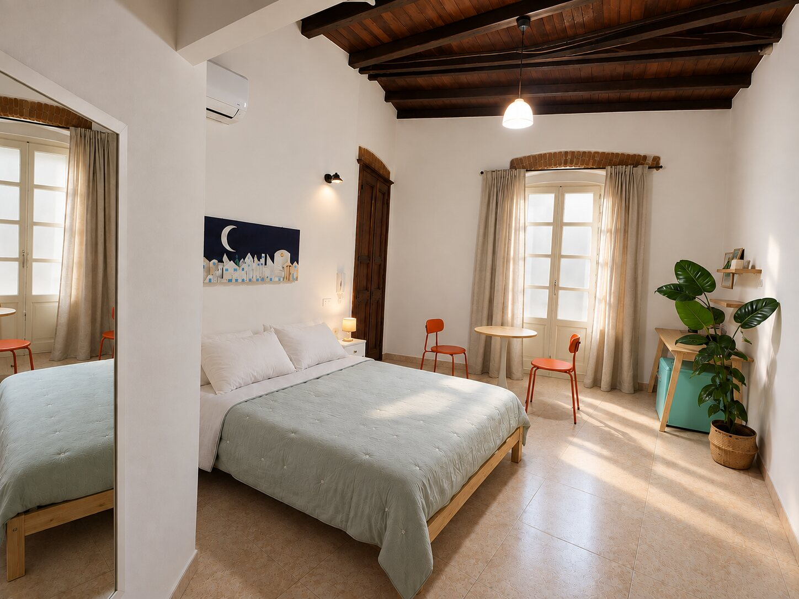
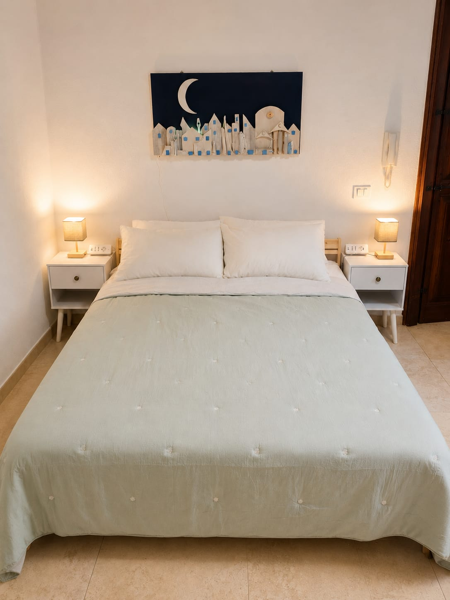
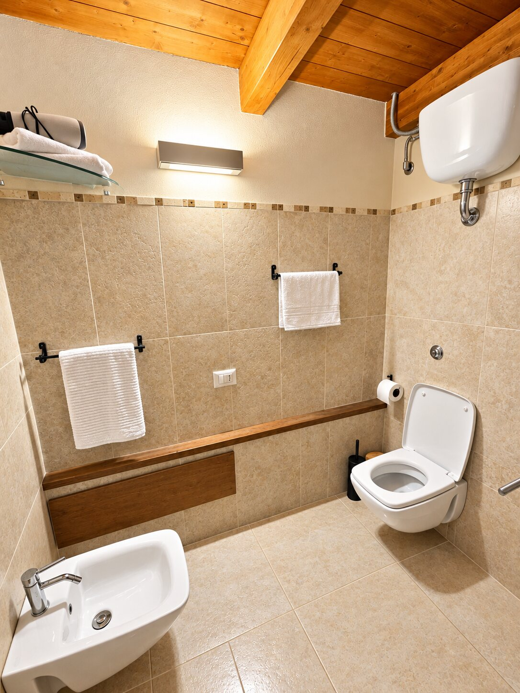

Habitación doble
Doble · máx. 2 personas · baño privado
En el corazón de Castello, luminosa y acogedora. Cama doble y baño privado con ducha: todo lo necesario para una estancia cómoda.
- Baño privado con ducha
- Aire acondicionado y calefacción
- Wi-Fi rápido gratis
- Ropa de cama y artículos de aseo